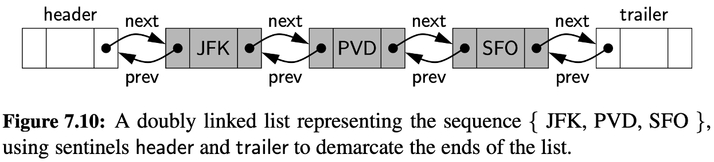
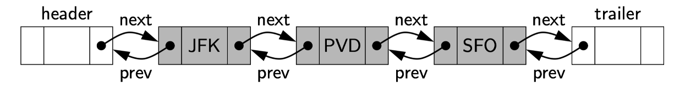
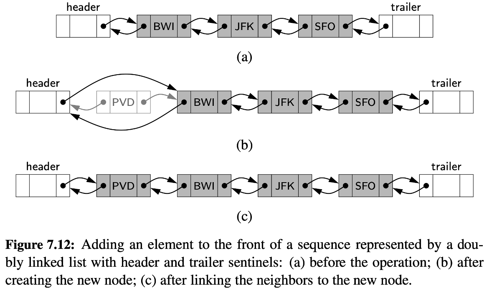
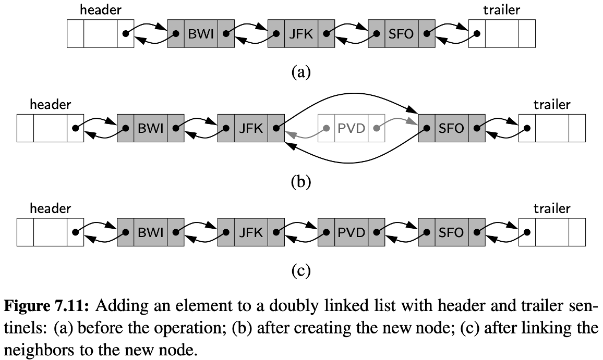
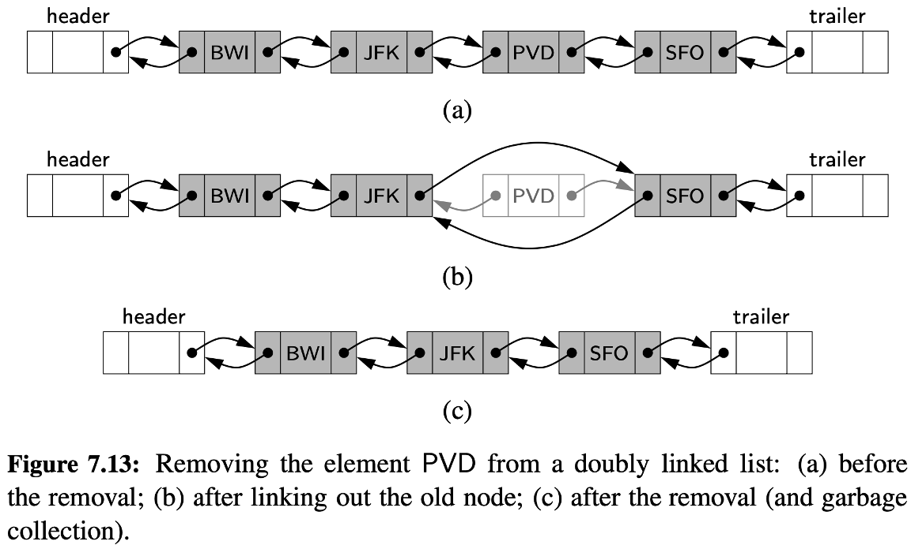
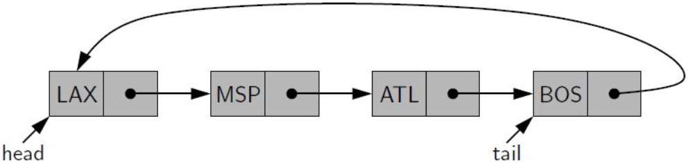

<!DOCTYPE html>
<html lang="en">
  <head>
    <meta charset="utf-8" />
    <meta name="viewport" content="width=device-width, initial-scale=1.0, maximum-scale=1.0, user-scalable=no" />

    <title></title>
    <link rel="stylesheet" href="dist/reveal.css" />
    <link rel="stylesheet" href="dist/theme/iph.css" id="theme" />
    <link rel="stylesheet" href="plugin/highlight/spyder.css" />
	<link rel="stylesheet" href="css/layout.css" />
	<link rel="stylesheet" href="plugin/customcontrols/style.css">


    <script defer src="dist/fontawesome/all.min.js"></script>

	<script type="text/javascript">
		var forgetPop = true;
		function onPopState(event) {
			if(forgetPop){
				forgetPop = false;
			} else {
				parent.postMessage(event.target.location.href, "app://obsidian.md");
			}
        }
		window.onpopstate = onPopState;
		window.onmessage = event => {
			if(event.data == "reload"){
				window.document.location.reload();
			}
			forgetPop = true;
		}

		function fitElements(){
			const itemsToFit = document.getElementsByClassName('fitText');
			for (const item in itemsToFit) {
				if (Object.hasOwnProperty.call(itemsToFit, item)) {
					var element = itemsToFit[item];
					fitElement(element,1, 1000);
					element.classList.remove('fitText');
				}
			}
		}

		function fitElement(element, start, end){

			let size = (end + start) / 2;
			element.style.fontSize = `${size}px`;

			if(Math.abs(start - end) < 1){
				while(element.scrollHeight > element.offsetHeight){
					size--;
					element.style.fontSize = `${size}px`;
				}
				return;
			}

			if(element.scrollHeight > element.offsetHeight){
				fitElement(element, start, size);
			} else {
				fitElement(element, size, end);
			}		
		}


		document.onreadystatechange = () => {
			fitElements();
			if (document.readyState === 'complete') {
				if (window.location.href.indexOf("?export") != -1){
					parent.postMessage(event.target.location.href, "app://obsidian.md");
				}
				if (window.location.href.indexOf("print-pdf") != -1){
					let stateCheck = setInterval(() => {
						clearInterval(stateCheck);
						window.print();
					}, 250);
				}
			}
	};


        </script>
  </head>
  <body>
    <div class="reveal">
      <div class="slides"><section  data-markdown><script type="text/template"><!-- .slide: class="has-light-background drop" data-background-color="#f8f8f8" -->
<div class="" style="position: absolute; left: 0px; top: 0px; height: 700px; width: 960px; min-height: 700px; display: flex; flex-direction: column; align-items: center; justify-content: center" absolute="true">

### Estructuras de Datos y Algoritmos

#### *Estructuras de Datos Lineales IV*

[Eduardo Rosales](mailto:ee.rosales24@uniandes.edu.co)

Departamento de Ingeniería de Sistemas y Computación

Universidad de los Andes
</div></script></section><section  data-markdown><script type="text/template"><!-- .slide: class="has-light-background drop" data-background-color="#f8f8f8" -->
<div class="" style="position: absolute; left: 0px; top: 0px; height: 700px; width: 960px; min-height: 700px; display: flex; flex-direction: column; align-items: center; justify-content: center" absolute="true">

### Lista doblemente enlazada simple - Double Linked List

- Cada nodo tiene referencias al nodo anterior y al siguiente​
    
- Introduce mayor flexibilidad operativa ​
    
	- Con referencias `"prev"` (anterior) y `"next"` (siguiente)
</div></script></section><section  data-markdown><script type="text/template"><!-- .slide: class="has-light-background drop" data-background-color="#f8f8f8" -->
<div class="" style="position: absolute; left: 0px; top: 0px; height: 700px; width: 960px; min-height: 700px; display: flex; flex-direction: column; align-items: center; justify-content: center" absolute="true">

### Doble enlazamiento


</div></script></section><section  data-markdown><script type="text/template"><!-- .slide: class="has-light-background drop" data-background-color="#f8f8f8" -->
<div class="" style="position: absolute; left: 0px; top: 0px; height: 700px; width: 960px; min-height: 700px; display: flex; flex-direction: column; align-items: center; justify-content: center" absolute="true">

### Centinela

- Nodo artificial cuyo único propósito es simplificar casos especiales
	- Establece el límite de una lista
- No almacena datos
- Permanecen inmutables
	- Solo cambian los nodos intermedios
- Son opcionales
- Ventajas:
	- Simplifican la lógica de implementación
		 - Inserción y borrado
			- Siempre serán entre nodos existentes
</div></script></section><section  data-markdown><script type="text/template"><!-- .slide: class="has-light-background drop" data-background-color="#f8f8f8" -->
<div class="" style="position: absolute; left: 0px; top: 0px; height: 700px; width: 960px; min-height: 700px; display: flex; flex-direction: column; align-items: center; justify-content: center" absolute="true">

### Complejidad temporal de la lista enlazada simple
</div></script></section><section  data-markdown><script type="text/template"><!-- .slide: class="has-light-background drop" data-background-color="#f8f8f8" -->
<div class="" style="position: absolute; left: 0px; top: 0px; height: 700px; width: 960px; min-height: 700px; display: flex; flex-direction: column; align-items: center; justify-content: center" absolute="true">

### Acceso  (1/2)





  - Acceso secuencial
	  - Debe recorrerse nodo por nodo desde la cabeza
  - Sin índices directos
      - No hay acceso inmediato a un nodo específico
</div></script></section><section  data-markdown><script type="text/template"><!-- .slide: class="has-light-background drop" data-background-color="#f8f8f8" -->
<div class="" style="position: absolute; left: 0px; top: 0px; height: 700px; width: 960px; min-height: 700px; display: flex; flex-direction: column; align-items: center; justify-content: center" absolute="true">

### Acceso  (2/2)


  - El tiempo de acceso aumenta con el tamaño de la lista
	  - En el peor caso, se visita cada nodo una vez
		  - Complejidad:
			- &shy;<!-- .element: class="fragment" data-fragment-index="1" --> O(n)
</div></script></section><section  data-markdown><script type="text/template"><!-- .slide: class="has-light-background drop" data-background-color="#f8f8f8" -->
<div class="" style="position: absolute; left: 0px; top: 0px; height: 700px; width: 960px; min-height: 700px; display: flex; flex-direction: column; align-items: center; justify-content: center" absolute="true">

### Inserción al inicio (1/2)


</div></script></section><section  data-markdown><script type="text/template"><!-- .slide: class="has-light-background drop" data-background-color="#f8f8f8" -->
<div class="" style="position: absolute; left: 0px; top: 0px; height: 700px; width: 960px; min-height: 700px; display: flex; flex-direction: column; align-items: center; justify-content: center" absolute="true">

### Inserción al inicio (2/2)

- Acceso inmediato al nodo centinela header
- Inserción directa después del header
-  Operación rápida e independiente del número de nodos
	- Complejidad:
    	- &shy;<!-- .element: class="fragment" data-fragment-index="1" --> O(1)
</div></script></section><section  data-markdown><script type="text/template"><!-- .slide: class="has-light-background drop" data-background-color="#f8f8f8" -->
<div class="" style="position: absolute; left: 0px; top: 0px; height: 700px; width: 960px; min-height: 700px; display: flex; flex-direction: column; align-items: center; justify-content: center" absolute="true">

### Eliminación al inicio

- Acceso inmediato al nodo centinela header
- Eliminación inmediata del nodo después del header
- Operación rápida e independiente del número de nodos
	- Complejidad:
    	- &shy;<!-- .element: class="fragment" data-fragment-index="1" --> O(1)
</div></script></section><section  data-markdown><script type="text/template"><!-- .slide: class="has-light-background drop" data-background-color="#f8f8f8" -->
<div class="" style="position: absolute; left: 0px; top: 0px; height: 700px; width: 960px; min-height: 700px; display: flex; flex-direction: column; align-items: center; justify-content: center" absolute="true">

###  Inserción interna


</div></script></section><section  data-markdown><script type="text/template"><!-- .slide: class="has-light-background drop" data-background-color="#f8f8f8" -->
<div class="" style="position: absolute; left: 0px; top: 0px; height: 700px; width: 960px; min-height: 700px; display: flex; flex-direction: column; align-items: center; justify-content: center" absolute="true">

###  Eliminación interna



</div></script></section><section  data-markdown><script type="text/template"><!-- .slide: class="has-light-background drop" data-background-color="#f8f8f8" -->
<div class="" style="position: absolute; left: 0px; top: 0px; height: 700px; width: 960px; min-height: 700px; display: flex; flex-direction: column; align-items: center; justify-content: center" absolute="true">

###  Inserción/Eliminación interna

- Inserción/Eliminación interna
	- Puede requerir recorrer hasta el nodo previo 
		- Al punto de inserción/eliminación
- Sin acceso directo
	- Se necesita navegar desde el header
		- Hasta la posición deseada
- El tiempo aumenta con la posición en la lista
	- En el peor caso, implica visitar n nodos 
		- Complejidad:
			- &shy;<!-- .element: class="fragment" data-fragment-index="1" -->O(n)
</div></script></section><section  data-markdown><script type="text/template"><!-- .slide: class="has-light-background drop" data-background-color="#f8f8f8" -->
<div class="" style="position: absolute; left: 0px; top: 0px; height: 700px; width: 960px; min-height: 700px; display: flex; flex-direction: column; align-items: center; justify-content: center" absolute="true">

### Inserción al final


- Acceso inmediato al centinela trailer
- Inserción directa antes del trailer
  - Operación rápida e independiente del número de nodos
	  - Complejidad:
    	- &shy;<!-- .element: class="fragment" data-fragment-index="1" --> O(1)
</div></script></section><section  data-markdown><script type="text/template"><!-- .slide: class="has-light-background drop" data-background-color="#f8f8f8" -->
<div class="" style="position: absolute; left: 0px; top: 0px; height: 700px; width: 960px; min-height: 700px; display: flex; flex-direction: column; align-items: center; justify-content: center" absolute="true">

### Eliminación al final

- Acceso inmediato al centinela trailer
- Eliminación directa del nodo antes del trailer
  - Operación rápida e independiente del número de nodos
	  - Complejidad:
    	- &shy;<!-- .element: class="fragment" data-fragment-index="1" --> O(1)
</div></script></section><section  data-markdown><script type="text/template"><!-- .slide: class="has-light-background drop" data-background-color="#f8f8f8" -->
<div class="" style="position: absolute; left: 0px; top: 0px; height: 700px; width: 960px; min-height: 700px; display: flex; flex-direction: column; align-items: center; justify-content: center" absolute="true">

### Complejidad temporal - Listas

<html lang="es"> <head> <meta charset="UTF-8"> <meta name="viewport" content="width=device-width, initial-scale=1.0">  <style> body { font-family: Arial, sans-serif; background-color: #f4f4f4; padding: 20px; } table { width: 100%; border-collapse: collapse; text-align: center; background-color: white; border-radius: 8px; overflow: hidden; box-shadow: 0px 4px 6px rgba(0, 0, 0, 0.1); } th, td { border: 1px solid black; padding: 10px; } th { background-color: #cfe2f3; /* Color del encabezado */ font-weight: bold; } td:first-child { font-weight: bold; } tr:nth-child(even) { background-color: #f9f9f9; } tr:hover { background-color: #f1f1f1; } </style> </head> <body> <table> <tr> <th>Estructura de datos</th> <th>Acceso</th> <th>Inserción al inicio</th> <th>Eliminación al inicio</th> <th>Inserción al final</th> <th>Eliminación al final</th> <th>Inserción/Eliminación interna</th> </tr> <tr> <td>Array List</td> <td><b>O(1)</b></td> <td>O(n)</td> <td>O(n)</td> <td><b>O(1)*</b></td> <td><b>O(1)<b></td> <td>O(n)</td> </tr> <tr> <td>Single Linked List</td> <td>O(n)</td> <td><b>O(1)</b></td> <td><b>O(1)</b></td> <td>O(n)**</td> <td>O(n)</td> <td>O(n)</td> </tr> <tr> <td>Head-Tail List</td> <td>O(n)</td> <td><b>O(1)</b></td> <td><b>O(1)</b></td> <td><b>O(1)</b></td> <td>O(n)</td> <td>O(n)</td> </tr> <tr> <td>Double Linked List</td> <td>O(n)</td> <td><b>O(1)</b></td> <td><b>O(1)</b></td> <td><b>O(1)</b></td> <td><b>O(1)</b></td> <td>O(n)</td> </tr> </table> </body> </html>

 \* Amortizado
 
 \*\* Si  no hay una referencia a la cola (no es un head-tail list), se debe recorrer todos los nodos para insertar al final
</div></script></section><section  data-markdown><script type="text/template"><!-- .slide: class="has-light-background drop" data-background-color="#f8f8f8" -->
<div class="" style="position: absolute; left: 0px; top: 0px; height: 700px; width: 960px; min-height: 700px; display: flex; flex-direction: column; align-items: center; justify-content: center" absolute="true">

### Lista circular (1/2)

- Cada nodo apunta a otro nodo
	- Formando un ciclo cerrado
- No hay un nodo apuntando a `None` 
	- El último nodo apunta al primero
</div></script></section><section  data-markdown><script type="text/template"><!-- .slide: class="has-light-background drop" data-background-color="#f8f8f8" -->
<div class="" style="position: absolute; left: 0px; top: 0px; height: 700px; width: 960px; min-height: 700px; display: flex; flex-direction: column; align-items: center; justify-content: center" absolute="true">

### Lista circular (2/2)


</div></script></section><section  data-markdown><script type="text/template"><!-- .slide: class="has-light-background drop" data-background-color="#f8f8f8" -->
<div class="" style="position: absolute; left: 0px; top: 0px; height: 700px; width: 960px; min-height: 700px; display: flex; flex-direction: column; align-items: center; justify-content: center" absolute="true">

### Características

- Puede ser **simplemente** o **doblemente** enlazada
- Al no tener inicio o fin fijos
	- Se puede recorrer de forma circular infinita
</div></script></section><section  data-markdown><script type="text/template"><!-- .slide: class="has-light-background drop" data-background-color="#f8f8f8" -->
<div class="" style="position: absolute; left: 0px; top: 0px; height: 700px; width: 960px; min-height: 700px; display: flex; flex-direction: column; align-items: center; justify-content: center" absolute="true">

### Lista Circular Simple - Circular Singly Linked List

- Cada nodo tiene un único puntero al siguiente nodo
	- El último nodo apunta al primero
</div></script></section><section  data-markdown><script type="text/template"><!-- .slide: class="has-light-background drop" data-background-color="#f8f8f8" -->
<div class="" style="position: absolute; left: 0px; top: 0px; height: 700px; width: 960px; min-height: 700px; display: flex; flex-direction: column; align-items: center; justify-content: center" absolute="true">

### Complejidad temporal de la lista circular simple
</div></script></section><section  data-markdown><script type="text/template"><!-- .slide: class="has-light-background drop" data-background-color="#f8f8f8" -->
<div class="" style="position: absolute; left: 0px; top: 0px; height: 700px; width: 960px; min-height: 700px; display: flex; flex-direction: column; align-items: center; justify-content: center" absolute="true">

### Acceso

- No existe acceso directo  
- Es necesario recorrer nodos hasta encontrar el deseado  
- Complejidad en el peor caso: 
	- &shy;<!-- .element: class="fragment" data-fragment-index="1" -->O(n)
</div></script></section><section  data-markdown><script type="text/template"><!-- .slide: class="has-light-background drop" data-background-color="#f8f8f8" -->
<div class="" style="position: absolute; left: 0px; top: 0px; height: 700px; width: 960px; min-height: 700px; display: flex; flex-direction: column; align-items: center; justify-content: center" absolute="true">

### Inserción al inicio

- Se asume un puntero al último nodo (`tail`)  :
	1. Enlazar el nuevo nodo con el "primero" (`tail->next`)  
	2. Actualizar `tail->next` para que apunte al nuevo nodo  
	3. Si la lista estaba vacía, el nuevo nodo se autoapunta  
- Complejidad: 
	- &shy;<!-- .element: class="fragment" data-fragment-index="1" -->O(1)
</div></script></section><section  data-markdown><script type="text/template"><!-- .slide: class="has-light-background drop" data-background-color="#f8f8f8" -->
<div class="" style="position: absolute; left: 0px; top: 0px; height: 700px; width: 960px; min-height: 700px; display: flex; flex-direction: column; align-items: center; justify-content: center" absolute="true">

### Eliminación al inicio

- Se asume un puntero al último nodo (`tail`)  :
	1. Si la lista tiene solo un nodo
		- Se marca `tail` como vacío  
	2. Si hay más nodos
		- `tail->next` se actualiza al segundo nodo  
- Complejidad: 
	- &shy;<!-- .element: class="fragment" data-fragment-index="1" -->O(1)
</div></script></section><section  data-markdown><script type="text/template"><!-- .slide: class="has-light-background drop" data-background-color="#f8f8f8" -->
<div class="" style="position: absolute; left: 0px; top: 0px; height: 700px; width: 960px; min-height: 700px; display: flex; flex-direction: column; align-items: center; justify-content: center" absolute="true">

### Inserción interna

- Se localiza el nodo anterior a la posición deseada  
- Se ajustan los punteros del nodo anterior y del nuevo nodo  
- Complejidad: 
	- &shy;<!-- .element: class="fragment" data-fragment-index="1" -->O(n) (por la búsqueda del punto de inserción)
</div></script></section><section  data-markdown><script type="text/template"><!-- .slide: class="has-light-background drop" data-background-color="#f8f8f8" -->
<div class="" style="position: absolute; left: 0px; top: 0px; height: 700px; width: 960px; min-height: 700px; display: flex; flex-direction: column; align-items: center; justify-content: center" absolute="true">

### Eliminación interna

- Se localiza el nodo a eliminar (o su anterior)  
- Se reconfiguran los punteros para mantener la circularidad  
- Complejidad: 
	- &shy;<!-- .element: class="fragment" data-fragment-index="1" -->O(n)
</div></script></section><section  data-markdown><script type="text/template"><!-- .slide: class="has-light-background drop" data-background-color="#f8f8f8" -->
<div class="" style="position: absolute; left: 0px; top: 0px; height: 700px; width: 960px; min-height: 700px; display: flex; flex-direction: column; align-items: center; justify-content: center" absolute="true">

### Inserción al final

- Se asume un puntero al último nodo (`tail`) :
	1. Apuntar el nuevo nodo hacia `tail->next` (nodo "primero")  
	2. Actualizar `tail->next` para que apunte al nuevo nodo  
	3. `tail` pasa a ser el nuevo nodo  
- Complejidad: 
	- &shy;<!-- .element: class="fragment" data-fragment-index="1" -->O(1)
</div></script></section><section  data-markdown><script type="text/template"><!-- .slide: class="has-light-background drop" data-background-color="#f8f8f8" -->
<div class="" style="position: absolute; left: 0px; top: 0px; height: 700px; width: 960px; min-height: 700px; display: flex; flex-direction: column; align-items: center; justify-content: center" absolute="true">

### Eliminación al final

- Se asume un puntero al último nodo (`tail`)  :
	1. Encontrar el nodo anterior a `tail` 
		- Recorriendo hasta que `nodo->next == tail`
	2. Actualizar `tail` al nodo anterior 
		- y enlazarlo con el "primero" (`tail->next`)  
- Complejidad: 
	- &shy;<!-- .element: class="fragment" data-fragment-index="1" -->O(n)
</div></script></section><section  data-markdown><script type="text/template"><!-- .slide: class="has-light-background drop" data-background-color="#f8f8f8" -->
<div class="" style="position: absolute; left: 0px; top: 0px; height: 700px; width: 960px; min-height: 700px; display: flex; flex-direction: column; align-items: center; justify-content: center" absolute="true">

### Lista Circular Doble - Circular Doubly Linked List

- Cada nodo tiene dos punteros: 
    - `"next"` (siguiente)
    - `"prev"` (anterior)
- El último nodo apunta al primero y viceversa
</div></script></section><section  data-markdown><script type="text/template"><!-- .slide: class="has-light-background drop" data-background-color="#f8f8f8" -->
<div class="" style="position: absolute; left: 0px; top: 0px; height: 700px; width: 960px; min-height: 700px; display: flex; flex-direction: column; align-items: center; justify-content: center" absolute="true">

### Complejidad temporal de la lista circular doble
</div></script></section><section  data-markdown><script type="text/template"><!-- .slide: class="has-light-background drop" data-background-color="#f8f8f8" -->
<div class="" style="position: absolute; left: 0px; top: 0px; height: 700px; width: 960px; min-height: 700px; display: flex; flex-direction: column; align-items: center; justify-content: center" absolute="true">

### Eliminación al final

- Con un puntero al último nodo (`tail`)  
	1. Si solo hay un nodo
		- La lista queda vacía  
	2. Si hay más de uno, 
		- Se ajustan `tail->prev->next` y 
		- `head->prev` (o el puntero a `tail`)
- Complejidad: 
	- &shy;<!-- .element: class="fragment" data-fragment-index="1" -->**O(1)**
</div></script></section><section  data-markdown><script type="text/template"><!-- .slide: class="has-light-background drop" data-background-color="#f8f8f8" -->
<div class="" style="position: absolute; left: 0px; top: 0px; height: 700px; width: 960px; min-height: 700px; display: flex; flex-direction: column; align-items: center; justify-content: center" absolute="true">

### Estructuras circulares -  Comparación de complejidades

<html lang="en">
<head>
  <meta charset="UTF-8">
  <meta name="viewport" content="width=device-width, initial-scale=1.0">
  <style>
    body {
      font-family: Arial, sans-serif;
      background-color: #f4f4f4;
      padding: 20px;
    }
    table {
      width: 100%;
      border-collapse: collapse;
      text-align: center;
      background-color: white;
      border-radius: 8px;
      overflow: hidden;
      box-shadow: 0px 4px 6px rgba(0, 0, 0, 0.1);
    }
    th, td {
      border: 1px solid black;
      padding: 10px;
    }
    th {
      background-color: #cfe2f3; /* Header color */
      font-weight: bold;
    }
    td:first-child {
      font-weight: bold;
    }
    tr:nth-child(even) {
      background-color: #f9f9f9;
    }
    tr:hover {
      background-color: #f1f1f1;
    }
  </style>
</head>
<body>
  <table>
    <tr>
      <th>Estructura circular</th>
<th>Acceso</th> <th>Inserción al inicio</th> <th>Eliminación al inicio</th> <th>Inserción al final</th> <th>Eliminación al final</th> <th>Inserción/ Eliminación interna</th>
    </tr>
    <tr>
      <td>Array List</td>
      <td><b>O(1)</b></td>
      <td>O(n)</td>
      <td>O(n)</td>
      <td><b>O(1)*</b></td>
      <td><b>O(1)*</b></td>
      <td>O(n)</td>
    </tr>
    <tr>
      <td>Singly Linked List (Head-Tail)</td>
      <td>O(n)</td>
      <td><b>O(1)</b></td>
      <td><b>O(1)</b></td>
      <td><b>O(1)<b></td>
      <td>O(n)</td>
      <td>O(n)</td>
    </tr>
    <tr>
      <td>Doubly Linked List</td>
      <td>O(n)</td>
      <td><b>O(1)</b></td>
      <td><b>O(1)</b></td>
      <td><b>O(1)</b></td>
      <td><b>O(1)</b></td>
      <td>O(n)</td>
    </tr>
    <tr>
      <td>Circular Singly Linked List</td>
      <td>O(n)</td>
      <td><b>O(1)</b></td>
      <td><b>O(1)</b></td>
      <td><b>O(1)</b></td>
      <td>O(n)</td>
      <td>O(n)</td>
    </tr>
    <tr>
      <td>Circular Doubly Linked List</td>
      <td>O(n)</td>
      <td><b>O(1)</b></td>
      <td><b>O(1)</b></td>
      <td><b>O(1)</b></td>
      <td><b>O(1)</b></td>
      <td>O(n)</td>
    </tr>
  </table>
</body>
</html>
</div></script></section><section  data-markdown><script type="text/template"><!-- .slide: class="has-light-background drop" data-background-color="#f8f8f8" -->
<div class="" style="position: absolute; left: 0px; top: 0px; height: 700px; width: 960px; min-height: 700px; display: flex; flex-direction: column; align-items: center; justify-content: center" absolute="true">

### Lista doblemente enlazada vs Lista circular doble

- Navegación continua 
	- Lista doble: Se debe reiniciar manualmente
    - Lista circular doble: Permite recorrido continuo
	    - Útil en buffers, planificación, videojuegos

- Misma complejidad, diferente utilidad
    
    - Eficiencia igual
    - Navegación cíclica sin reinicios:
	    - Lista circular doble
</div></script></section><section  data-markdown><script type="text/template"><!-- .slide: class="has-light-background drop" data-background-color="#f8f8f8" -->
<div class="" style="position: absolute; left: 0px; top: 0px; height: 700px; width: 960px; min-height: 700px; display: flex; flex-direction: column; align-items: center; justify-content: center" absolute="true">

<i class="fas fa-question-circle fa-2x fa-spin fa-4x"></i>


<br>
<br>


[<i class="fas fa-home  fa-3x"></i>](https://eerosales24.github.io/eda_2025_20/#)
</div></script></section></div>
    </div>

    <script src="dist/reveal.js"></script>

    <script src="plugin/markdown/markdown.js"></script>
    <script src="plugin/highlight/highlight.js"></script>
    <script src="plugin/zoom/zoom.js"></script>
    <script src="plugin/notes/notes.js"></script>
    <script src="plugin/math/math.js"></script>
	<script src="plugin/mermaid/mermaid.js"></script>
	<script src="plugin/chart/chart.min.js"></script>
	<script src="plugin/chart/plugin.js"></script>
	<script src="plugin/customcontrols/plugin.js"></script>

    <script>
      function extend() {
        var target = {};
        for (var i = 0; i < arguments.length; i++) {
          var source = arguments[i];
          for (var key in source) {
            if (source.hasOwnProperty(key)) {
              target[key] = source[key];
            }
          }
        }
        return target;
      }

	  function isLight(color) {
		let hex = color.replace('#', '');

		// convert #fff => #ffffff
		if(hex.length == 3){
			hex = `${hex[0]}${hex[0]}${hex[1]}${hex[1]}${hex[2]}${hex[2]}`;
		}

		const c_r = parseInt(hex.substr(0, 2), 16);
		const c_g = parseInt(hex.substr(2, 2), 16);
		const c_b = parseInt(hex.substr(4, 2), 16);
		const brightness = ((c_r * 299) + (c_g * 587) + (c_b * 114)) / 1000;
		return brightness > 155;
	}

	var bgColor = getComputedStyle(document.documentElement).getPropertyValue('--r-background-color').trim();
	var isLight = isLight(bgColor);

	if(isLight){
		document.body.classList.add('has-light-background');
	} else {
		document.body.classList.add('has-dark-background');
	}

      // default options to init reveal.js
      var defaultOptions = {
        controls: true,
        progress: true,
        history: true,
        center: true,
        transition: 'default', // none/fade/slide/convex/concave/zoom
        plugins: [
          RevealMarkdown,
          RevealHighlight,
          RevealZoom,
          RevealNotes,
          RevealMath.MathJax3,
		  RevealMermaid,
		  RevealChart,
		  RevealCustomControls,
        ],


    	allottedTime: 120 * 1000,

		mathjax3: {
			mathjax: 'plugin/math/mathjax/tex-mml-chtml.js',
		},
		markdown: {
		  gfm: true,
		  mangle: true,
		  pedantic: false,
		  smartLists: false,
		  smartypants: false,
		},

		mermaid: {
			theme: isLight ? 'default' : 'dark',
		},

		customcontrols: {
			controls: [
			]
		},
      };

      // options from URL query string
      var queryOptions = Reveal().getQueryHash() || {};

      var options = extend(defaultOptions, {"width":960,"height":700,"margin":"0.025","minScale":"0.1","maxScale":"2.0","controls":"true","controlsLayout":"bottom-right","progress":"true","slideNumber":"true","center":"false","transition":"slide","transitionSpeed":"default"}, queryOptions);
    </script>

    <script>
      Reveal.initialize(options);
    </script>
  </body>

  <!-- created with Advanced Slides -->
</html>
